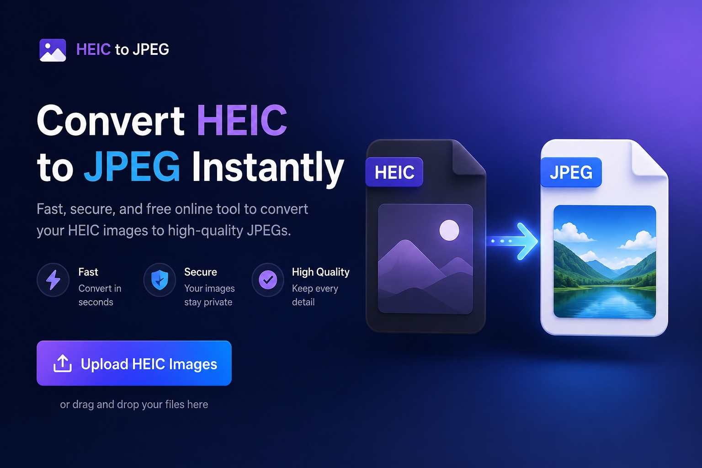
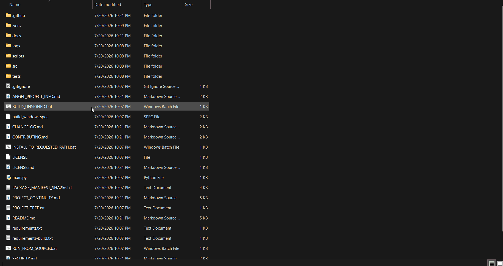

↔
Easy photo selection
Drag and drop photos or choose them through the file picker.

Convert HEIC and HEIF photos into widely compatible JPG images with a straightforward Windows desktop app.
Example project artwork is included with the repository. Open the repository to review the current source and release files.

Example animation · images/example.gif
Drag and drop photos or choose them through the file picker.
Select and convert up to 20 photos per batch.
Pick where converted JPG images should be saved.
Adjust JPEG output quality; the default is 95%.
Review conversion results for individual files.
Photos are processed locally without an online account or photo uploads.
Original photos are left unchanged. Existing output files are not intentionally overwritten.
Drag photos into the app or use the file picker.
Choose the folder for converted JPG files.
Keep the 95% default or change JPEG quality.
Convert up to 20 photos in a batch.
Check the status of each file.
Your source photos remain unchanged.
No Rust installation or source compilation is needed to run the prebuilt application.
build_output/rust.tcd-heic-to-jpg.exe.build_output/rust.tcd-heic-to-jpg.exe.Keep the executable and its release files together, including README.txt and SHA256SUMS.txt.
The release folder contains SHA256SUMS.txt. To calculate the executable hash in PowerShell from the extracted repository folder, run:
Get-FileHash ".\build_output\rust\tcd-heic-to-jpg.exe" -Algorithm SHA256Compare the displayed hash with the value recorded in build_output/rust/SHA256SUMS.txt. The values must match exactly.
To build the Rust edition on Windows, install a stable Rust toolchain and vcpkg, and make the required libheif dependency available for the x64 static triplet.
vcpkg install libheif:x64-windows-static-md
$env:VCPKG_ROOT = "C:\DevTools\vcpkg"
cargo build --releaseThese example commands assume vcpkg is installed at C:\DevTools\vcpkg. Adjust VCPKG_ROOT to match your installation. The executable is generated at target\release\tcd-heic-to-jpg.exe.
Read the safety guide for additional project information.
Thinking about buying an action camera? If you want a compact camera for capturing adventures, travel, outdoor activities, or hands-free footage, take a look at this recommendation.
Check the current product details, features, included accessories, and customer reviews to decide whether it fits your needs and budget.
Affiliate disclosure: This page contains an affiliate link. I may earn a commission from qualifying purchases at no additional cost to you.
Found a problem or want to suggest an improvement?
Review the repository's LICENSE file for applicable use and redistribution terms.